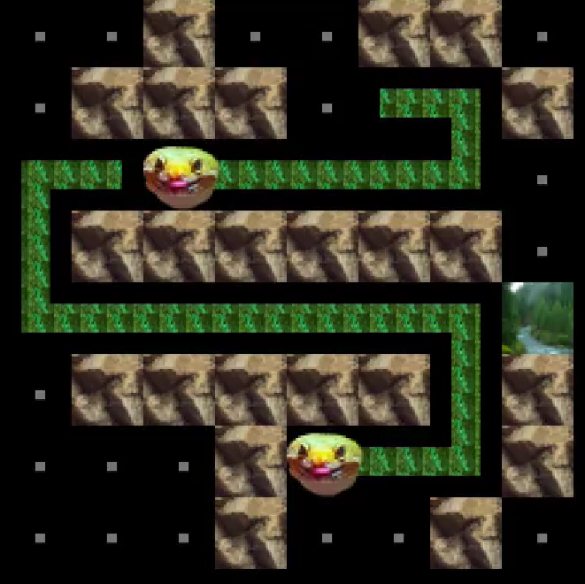

The Challenge Database
Developed a full-stack web application using Express.js and MongoDB to dynamically render content and store structured data on MTV’s reality competition show, The Challenge.
Designed and implemented a MongoDB database schema to efficiently store contestant statistics, season details, and challenge outcomes for quick and scalable data retrieval.
Built RESTful API routes to handle HTTP requests, including GET requests for retrieving show data and search functionality to filter results based on user input.
Implemented advanced search and filtering capabilities, allowing users to query data based on season, contestant name, eliminations, wins, and alliances.
Configured middleware such as body-parser for parsing incoming request bodies and CORS to enable secure cross-origin requests between frontend and backend.
Lizzard Game

Designed and developed an engaging grid-based game in Java, where players control a lizard navigating through a dynamically changing environment. Each lizard is modeled as a series of connected body segments, mimicking “snake-like” movement patterns.
Engineered a robust grid management system within the LizardGame class, facilitating interactions between the lizard, walls, exits, and various other grid objects, enhancing game complexity and player engagement.
Implemented comprehensive game mechanics, including lizard movement constrained by grid boundaries, collision detection with walls and exits, and responsive adjustments of the lizard’s body direction based on user input.
Incorporated listener-based event handling to update game states in real-time, managing score updates and triggering player notifications during key events (e.g., winning the game or colliding with obstacles).
Utilized JUnit for rigorous testing of game functionalities, ensuring reliable collision handling, accurate movement constraints, and seamless game flow.